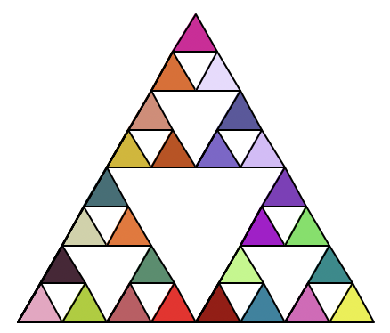

Basic koch_curve(t, 4, 20)
koch_curve2(raphael, 4, 15, 2) The depth two of this Koch Curve includes two spikes instead of the usual one. The width and color are also modified and every other step is skipped.
def koch_curve2(t, depth, size, w): t.width(w) if (depth == 1): t.fd(size) else: t.pencolor("green") koch_curve2(t, depth-1, size, w) t.lt(75) t.pencolor("green") koch_curve2(t, depth-1, size, w) t.rt(150) t.pencolor("white") koch_curve2(t, depth-1, size, w) t.lt(75) t.pencolor("green") koch_curve2(t, depth-1, size, w) t.lt(75) t.pencolor("green") koch_curve2(t, depth-1, size, w) t.rt(150) t.pencolor("white") koch_curve2(t, depth-1, size, w) t.lt(75) t.pencolor("green") koch_curve2(t, depth-1, size, w)
Basic sierpinski(raphael, 4, 200)
sierpinski1(raphael, 4, 200) In this version, each triangle is individually filled in with a different color which is randomized.

def sierpinski1(t, depth, size, scale_factor=1): if depth == 1: color = (random.randrange(255),random.randrange(255), random.randrange(255)) triangle1(t, size, color) else: sierpinski1(t, depth-1, size/2) t.fd(size/2) sierpinski1(t, depth-1, size/2) t.bk(size/2) t.lt(60) t.fd(size/2) t.rt(60) sierpinski1(t, depth-1, size/2) t.rt(120) t.fd(size/2) t.lt(120)
Basic tree(raphael, 5, 40, 30)
tree1(raphael, 6, 45, 30, 5) The tree's branches are given color, width is added which decreases as the branches split, angle is randomized to make it more like a real tree.
def tree1(t, depth, size, angle, width): t.width(width) angle = angle * (random.randrange(8,12))/10 if depth == 0: t.pencolor("green") t.fd(size) t.bk(size) t.pencolor("brown") else: t.pencolor("brown") t.fd(size) t.rt(angle) tree1(t, depth-1, size*0.8, angle, width*0.75) t.lt(2 * angle) tree1(t, depth-1, size*0.8, angle, width*0.75) t.rt(angle) t.bk(size)